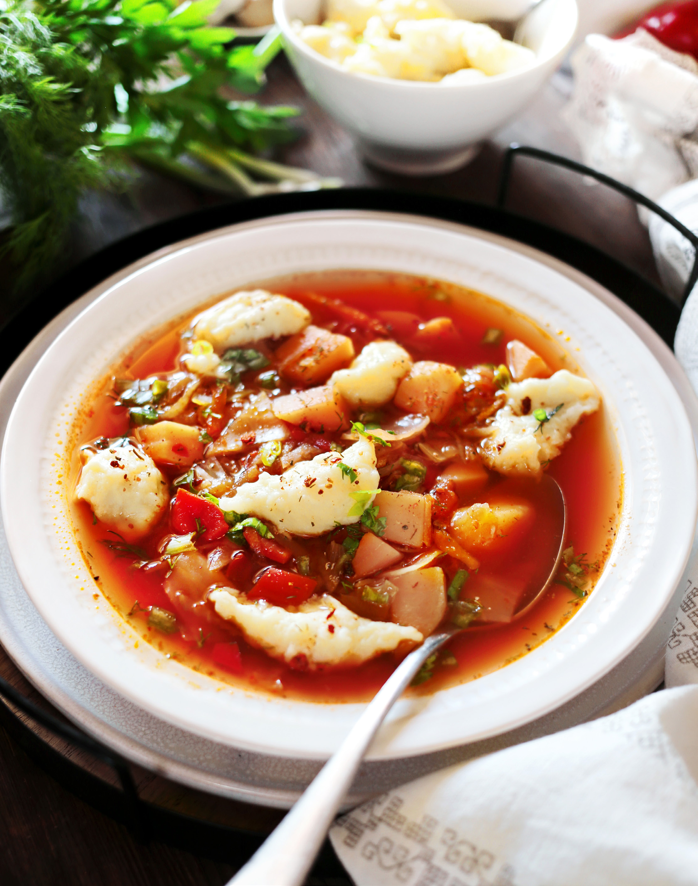

Его чаще всего готовят на бульоне из птицы: утки, гуся, можно взять и курицу. Ничто не мешает вам приготовить борщ на свинине или говядине, используя рецепт как базу. Мало того, не обязательно готовить к нему галушки, можно воспользоваться замечательным рецептом пампушек с чесноком, он есть в открытом доступе группы. Но тут вы получаете два в одном: галушки хороши сами по себе, со сливочным маслом или с поджаркой из лука, сала и кусочков свинины. А борщ в сочетании с ними откроется по-новому. По сути галушки — это клёцки, можно сказать, вареники без начинки, их отваривают отдельно и добавляют в тарелку борща непосредственно перед подачей. И ещё одна особенность у борща по-полтавски: капусту для него чаще всего нарезают квадратиками, а не шинкуют, как обычно. Всё остальное — довольно традиционно.
для бульона:
для пассеровки: